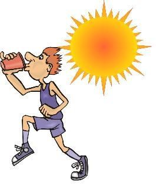

photos from this season:

photos from past seasons:
Highlight from the second meet of the season... the athletes are quickly showing some improvement! The girls' squad put up a 4th place team score against some pretty talented teams. The boys narrowly (by 1 point!) missed a top 5 team finish to last year's Region champion Sandy Creek team. The gap has narrowed and should make for a great region competition on the boys side this year! Click here to see complete meet results.
The season kicked off on August 19th at Boundary Waters Park. The varsity boys' team finished 6th and the girls raced to a 7th place finish. All team scores and complete results can be found on Georgia milesplit or click here to go to the meet results.

Wilson Moore ('17) will continue his racing career as a member of the Georgia College Bobcats. Congratulations Wilson! Read more here: GCBobcats!